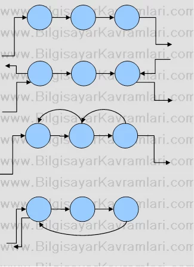

Linked List (Linkli Liste veya Bağlı Liste)
Bağlı liste herhangi bir tipten node'ların (düğümlerin) yine kendi tiplerinden düğümlere işaret etmesi (point) ile oluşan zincire verilen isimdir. Buna göre her düğümde kendi tipinden bir pointer olacak ve bu pointerlar ile düğümler birbirine aşağıdaki şekilde bağlanacaktır.
Linked List'in avantajı, hafızayı dinamik olarak kullanmasıdır. Buna göre hafızadan silinen bir bilgi için hafıza alanı boşaltılacak veya yeni eklenen bir bilgi için sadece o bilgiyi tutmaya yetecek kadar hafıza alanı ayrılacaktır.
Yukarıdaki figürde görülen bağlı listeye çok benzeyen ve yine çok kullanılan bir bağlı liste uygulaması da çift bağlı liste (double linked list) uygulamasıdır.
Buna göre her düğüm, her kendinden öncekine hem de kendinden sonrakine bağlanır, bu sayede liste üzerinde ileri ve geri ilerlemek mümkündür.
Yukarıdaki şekilde, sırasıyla, Tek bağlı liste (singular linked list), çift uçlu bağlı liste (double linked list) ve dairesel bağlı liste (circular linked list) görülmektedir.
Listelerin üzerinde işlem yapılırken, dolaşıcı (iterator) şeklinde bir gösterici tanımlanır. Bu dolaşıcı veri aranması, ekleme veya silme gibi işlemler sırasında listenin ilgili elemanına kadar gidilmesini sağlar. Listenin ilgili elemanına gidildikten sonra silme veya ekleme gibi işlemler yapılırken göstericilerde (pointers) yapılan değişikliklerin, listeyi etkilemesini sağlar.
Örneğin bir bağlı listeye yeni bir eleman eklenmesi sırasında aşağıdaki adımlar izlenir :
- Ekleme işlemi yapılacağı aralıktan önceki düğüme dolaşıcı tarafından gidilir.
- Yeni düğüm oluşturularak, sonrasına, dolaşıcının sonrası atanır.
- Dolaşıcının sonrasına ise yeni düğüm atanır.
Yukarıdaki şekilde bu ekleme işlemi sırasıyla gösterilmiştir. İlk şekilde dolaşıcı ilgili düğüme gelmiş, ikinci şekilde yeni bir düğüm eklenmiş ve sonrasına, dolaşıcının sonrası atanmış ve son şekilde ise dolaşıcı ile gösterilen düğümün sonrasına yeni düğüm eklenmiştir.
Aynı durumu çift bağlı listeler için ele alacak olursak :
Yukarıdaki şekilde öncelikle ekleme yapılacak aralığa dolaşıcı tarafından gidilir. İkinci adımda yeni düğüm eklenir. Ardından göstericileri yukarıdaki şekilde anlatıldığı gibi sırayla atanır.
Bağlı Listeden Bir Düğümün Silinmesi
Bağlı listeden eleman silinmesi sırasında, listede silinecek olan elemandan önceki düğüme kadar dolaşıcı ile gidilir. Dolaşıcının sonrasına, sonrasının sonrası atanır. Bu sayede ilk başta dolaşıcının sonrasında olan düğüm listeden kaldırılmış ve ulaşılamaz hale gelmiş olur. Ardından bu eleman istenirse hafızadan da kaldırılır.
Bağlı listelerin nesne yönelimli programlama dillerinde pointer tipi bulunmamasından dolayı kodlanması biraz farklıdır. Bilindiği gibi C++ gibi melez (hem C hem de nesne yönelimli programlamayı destekler) diller dışında JAVA, C# gibi dillerde gösterici (pointer) bulunmaz. Bunun yerine nesne göstericisi (object referrer) bulunur. Bu değişken tipleri esas olarak bir sınıf (class)'dan türetilmiş bir nesneyi (object) gösterebilen değişkenlerdir. Bu değişkenlerin aslında birer göstericiden farkı yoktur.
Örnek Bağlı Liste Kodları :
- Basit bir bağlı liste örnek kodu 10 adet sayıyı ekleyerek ekrana basan kod.
- Basit bir bağlantılı liste kodu NULL kontrolü ile 10 adet sayı ekleyerek ekrana basan kod. Liste boyutu bilinmiyorken liste sonuna kadar gider.
- Bir bağlı listede arama yapan kod Arama sonucunda bulunan düğümün işaretçisini döndürür.
- Circular (dairesel) Bağlı liste Dairesel bağlı listeye 10 sayı ekleyerek ekrana basar.
- Çift Bağlı liste Çift yönlü bağlı listeye 10 sayı ekleyerek listenin ters bağlantısı üzerinden listeyi ters basan kod.
- Çift Bağlı Dairesel listeye ekleme ve listeden silme yapan fonksiyon kodları.
- Dairesel tek yönlü bağlı listeye ekleme yapan, sıralı ekleme yapan ve silen kod
Kaynakça : Bilgisayar Kavramları